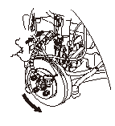
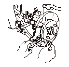
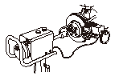

フロント ブレーキ ディスクの点検、修正
専用工具
ブレーキ ディスク グラインダ キット KF-8-DU8602*
*専用指定市販工具
振れ点検
フロント ホイールを取外す。
キャリパ ボディをキャリパ ブラケットから取外す。
ホイール ナットのテーパ部を損傷させないように適当な平ワッシャ（A）を介して、ホイール ナット（B）でブレーキ ディスクを確実に固定する。
ディスクの外周から約10mm中心寄りの位置に、図のようにダイヤル ゲージ（C）を当てる。
手でディスクをゆっくり回して振れを測定する。ゲージ読みの最小から最大の幅を振れ値とする。
ブレーキ ディスクの振れ:
限度値:
0.04mm
限度値を越えている場合は、ハブ ベアリングを点検し、ベアリングに異常がない場合は、ブレーキ ディスクを切削修正する。
キャリパ ボディをキャリパ ブラケットに取付ける。
フロント ホイールを取付ける。
ホイールは、ブレーキ ディスクとの合わせ面をそれぞれ清掃してから取付ける。

厚さ、平行度の点検
フロント ホイールを取外す。
キャリパ ボディをキャリパ ブラケットから取外す。
ブレーキ ディスク（A）の摺動面の亀裂、異常な傷や段付き摩耗を点検する。
ブレーキ ディスクの厚さを、ディスクの外周から
10mm
中心寄りの位置で、約45°間隔で8箇所測定する。このうち最小値を限度値とする。
ブレーキ ディスクの厚さ:
標準値:
21.0mm
限度値:
19.0mm
ブレーキ ディスクの平行度（各測定値の差の最大値）:
限度値:
0.015mm
厚さが限度値を越えている場合は、ブレーキ ディスクを交換する。平行度が限度値を越えている場合は、ブレーキ ディスクを切削修正する。
キャリパ ボディをキャリパ ブラケットに取付ける。
フロント ホイールを取付ける。
ホイールは、ブレーキ ディスクとの合わせ面をそれぞれ清掃してから取付ける。

切削修正
フロント ホイールを取外す。
キャリパをナックルから取外す。
ブレーキ ディスク グラインダ（専用指定市販工具）（A）を使用して切削修正する。
•
モータ駆動方式のブレーキ ディスク グラインダで切削修正を行う。
•
ブレーキ ディスク グラインダの使用方法はグラインダの取扱説明書を参照する。
•
ブレーキ ディスクの厚さ限度値を越えないよう切削する。
切削修正後、再度ブレーキ ディスクの振れ点検および平行度の点検を行い、次の限度値以下であることを確認する。
切削修正後の限度値:
ブレーキ ディスクの振れ:
0.04mm
ブレーキ ディスク平行度:
0.015mm
キャリパをナックルに取付ける。
フロント ホイールを取付ける。
ホイールは、ブレーキ ディスクとの合わせ面をそれぞれ清掃してから取付ける。

 ホイールは、ブレーキ ディスクとの合わせ面をそれぞれ清掃してから取付ける。
ホイールは、ブレーキ ディスクとの合わせ面をそれぞれ清掃してから取付ける。